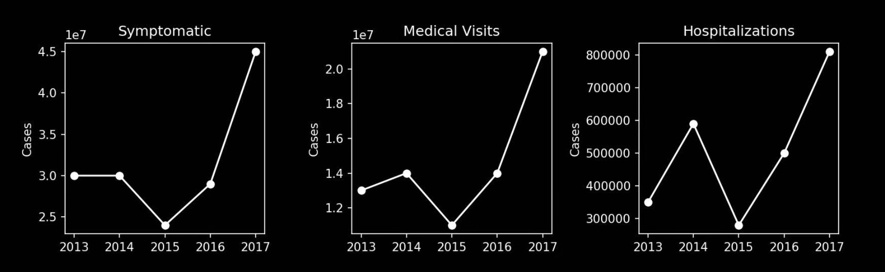

The time has come.
Flu is serious. Each year, more patients in the United States get sick because of flu. In 2017 alone, over 45 million people experienced flu symptoms, whereas over 20 million people sought medical care for their severe symptoms. Such large population impacted by the disease reflects the seriousness of flu. 
Similar symptoms, more severe consequences. Because flu is a disease infecting the respiratory system, it exhibits symptoms similar to common cold, such as cough, sour throat, tiredness, etc. However, flu generally has more severe symptoms and can even cause death in some cases because of the invasiveness of flu viruses.
When is the flu season? Fortunately, although flu viruses circulate throughout the year, most flu cases occurs in the "flu season." The time of flu season in the United States varies by year, but it majorly comes during autumn and winter. Therefore, special care is needed to prevent flu infection during the flu season.